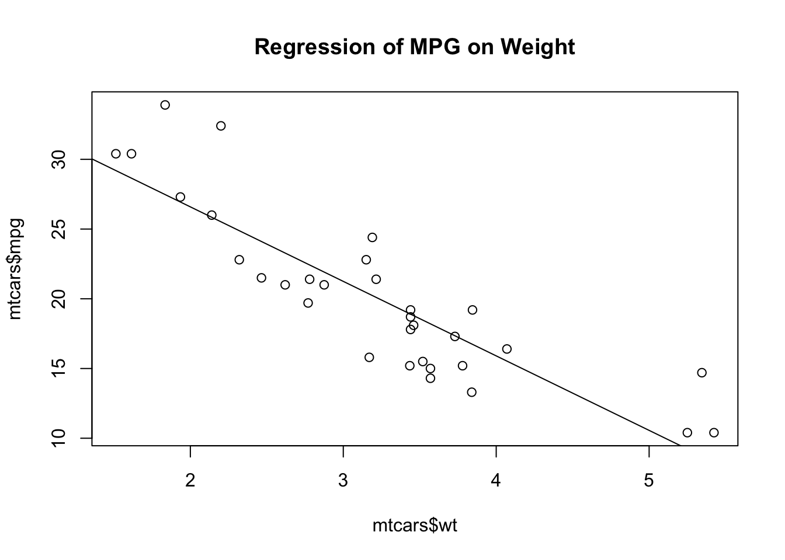
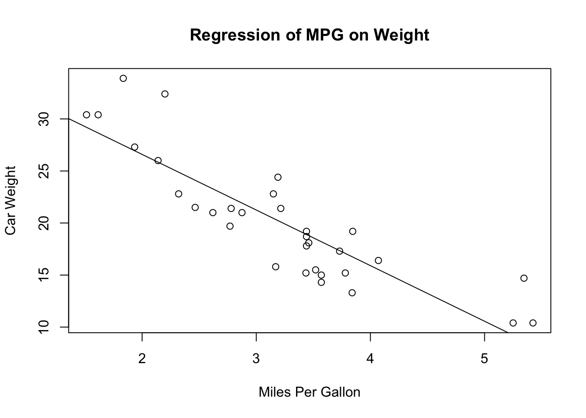
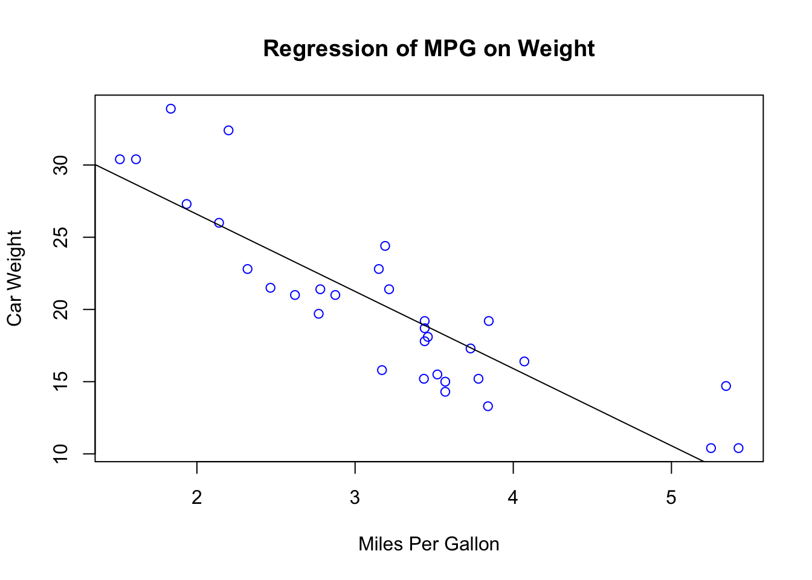
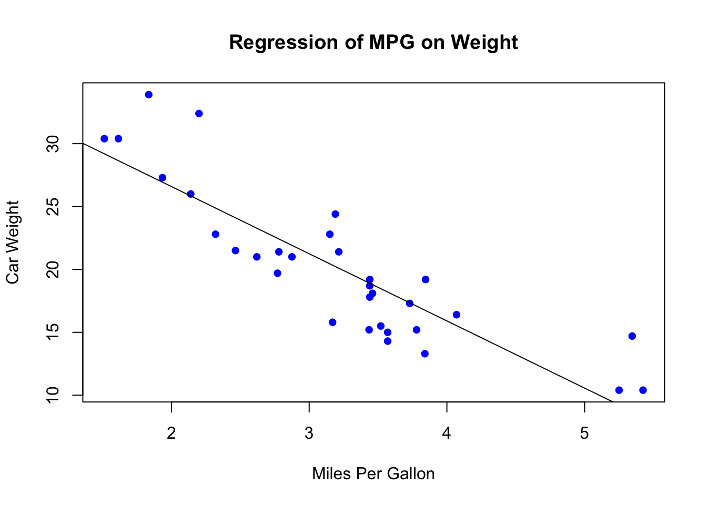
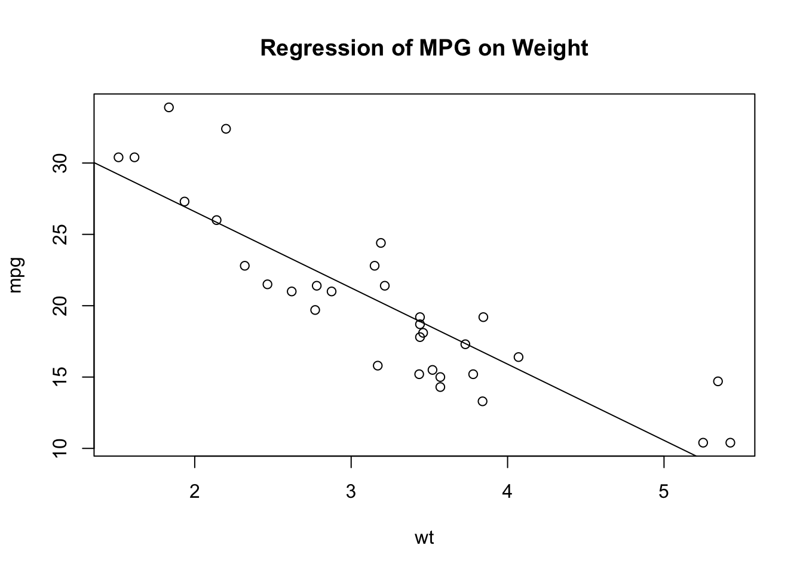
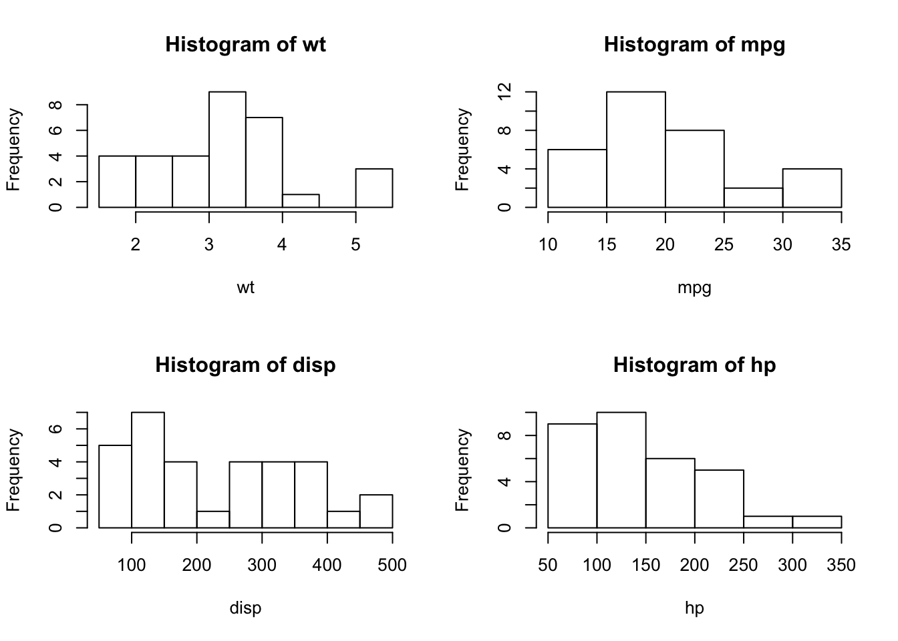
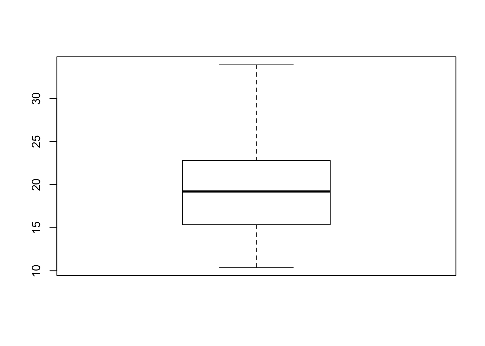

Chapter 3 新手上路 R Basics 2
3.1 为什么要学统计？
不管你是谁，不得不承认，我们所生活的世界，复杂，多变，充满随机性与不确定性。
同时，在这纷繁复杂的表象里面，也蕴含着必然的规律，也可以说是“套路”。
发现这些规律，帮助我们更好的理解我们的世界，作出更正确的决定，做更好的自己，哦耶。
这正是统计学干的事情。
不，我们借统计学干的事情。
[]!(/Users/yuandong/Dropbox/Public/stats.png)
- 幸存者偏差，二战盟军统计学家沃尔德
- 老物件、双盲实验、成功者的故事（从大学退学的特征）
- 不能只看贼吃肉，不看贼挨揍
3.2 补一点统计知识
描述性统计：Summary statistics
3.2.1 集中趋势统计量: 均值（Mean)、中位数(Median)、众数(Mode)、百分位数(percentile)
- 均值（Mean): 描述数据取值的平均位置，指一组数据的平均数
## [1] 20.09062- 中位数(Median): 定义为数据排序位于中间位置的值
## [1] 19.2*众数(Mode): 就是一组数据中占比例最多的那个数， R中未提供直接调用的函数
## [1] "10.4"*百分位数 (percentile)
## 0% 25% 50% 75% 100%
## 10.400 15.425 19.200 22.800 33.9003.2.2 离散趋势统计量：方差（var)、极差（range)
- 方差（Variance): 是描述数据取值分散性的一个度量.样本方差(sample variance)是样本相对于均值的偏差平方和的平均,记为s2:
\[s2=\frac{1}{n-1}\sum ^n _{i=1} (x_i-\bar{x})^2\] * 标准差就是方差开方：
\[s=\sqrt{\frac{1}{n-1}\sum ^n _{i=1} (x_i-\bar{x})^2}\]
## [1] 36.3241- 极差（Range): 描述样本分散性的数字特征.当数据越分散,其极差越大
## [1] 10.4 33.9## Min. 1st Qu. Median Mean 3rd Qu. Max.
## 10.40 15.43 19.20 20.09 22.80 33.90## mpg cyl disp hp
## Min. :10.40 Min. :4.000 Min. : 71.1 Min. : 52.0
## 1st Qu.:15.43 1st Qu.:4.000 1st Qu.:120.8 1st Qu.: 96.5
## Median :19.20 Median :6.000 Median :196.3 Median :123.0
## Mean :20.09 Mean :6.188 Mean :230.7 Mean :146.7
## 3rd Qu.:22.80 3rd Qu.:8.000 3rd Qu.:326.0 3rd Qu.:180.0
## Max. :33.90 Max. :8.000 Max. :472.0 Max. :335.0
## drat wt qsec vs
## Min. :2.760 Min. :1.513 Min. :14.50 Min. :0.0000
## 1st Qu.:3.080 1st Qu.:2.581 1st Qu.:16.89 1st Qu.:0.0000
## Median :3.695 Median :3.325 Median :17.71 Median :0.0000
## Mean :3.597 Mean :3.217 Mean :17.85 Mean :0.4375
## 3rd Qu.:3.920 3rd Qu.:3.610 3rd Qu.:18.90 3rd Qu.:1.0000
## Max. :4.930 Max. :5.424 Max. :22.90 Max. :1.0000
## am gear carb
## Min. :0.0000 Min. :3.000 Min. :1.000
## 1st Qu.:0.0000 1st Qu.:3.000 1st Qu.:2.000
## Median :0.0000 Median :4.000 Median :2.000
## Mean :0.4062 Mean :3.688 Mean :2.812
## 3rd Qu.:1.0000 3rd Qu.:4.000 3rd Qu.:4.000
## Max. :1.0000 Max. :5.000 Max. :8.0003.3 基本作图
一图胜千言
人类非常善于从视觉呈现中洞察关系。一幅精心绘制的图形能够帮助你在数以千计的零散信 息中做出有意义的比较，提炼出使用其他方法时不那么容易发现的模式。这也是统计图形领域的 进展能够对数据分析产生重大影响的原因之一。数据分析师需要观察他们的数据，而R在该领域 表现出众。（Actions in R）
R是一个惊艳的图形构建平台。在通常的交互式会话中，我们可 以通过逐条输入语句构建图形，逐渐完善图形特征，直至得到想要的效果。
plot()是R中为对象作图的一个泛型函数(它的输出将根据所绘制对象类型的不同而变化)。
将x置于横轴，将y置于纵轴，绘制点集(x, y)，散点图。使用help(plot)可以查看其他选项。

plot(mtcars$wt, mtcars$mpg,
xlab="Miles Per Gallon",
ylab="Car Weight")
abline(lm(mtcars$mpg~mtcars$wt))
title("Regression of MPG on Weight")
第一条语句打开了一个图形窗口并生成了一幅散点图，横轴表 示车身重量，纵轴为每加仑汽油行驶的英里数。第二句向图形添加了一条最优拟合曲线。第三句 添加了标题。
plot(mtcars$wt, mtcars$mpg,
xlab="Miles Per Gallon",
ylab="Car Weight",
col=4)
abline(lm(mtcars$mpg~mtcars$wt))
title("Regression of MPG on Weight")
plot(mtcars$wt, mtcars$mpg,
xlab="Miles Per Gallon",
ylab="Car Weight",
col=4,
pch=16)
abline(lm(mtcars$mpg~mtcars$wt))
title("Regression of MPG on Weight")
总是用美元符号，是不是太麻烦？换一种方式：

全局参数设定，多图同列, 例如设置2列2行：
四个直方图：

箱图

可以通过代码或图形用户界面来保存图形。
要通过代码保存图形，将绘图语句夹在开启目标 图形设备的语句和关闭目标图形设备的语句之间即可。例如，以下代码会将图形保存到当前工作 目录中名为mygraph.pdf的PDF文件中(R in Action):
pdf("mygraph.pdf")
attach(mtcars)
plot(wt, mpg)
abline(lm(mpg~wt))
title("Regression of MPG on Weight")
detach(mtcars)
dev.off()## quartz_off_screen
## 2除了pdf()，还可以使用函数win.metafile()、png()、jpeg()、bmp()等将图形保存为其他格式。
通过图形用户界面保存图形，在RStudio的右下角，“Export”即可。